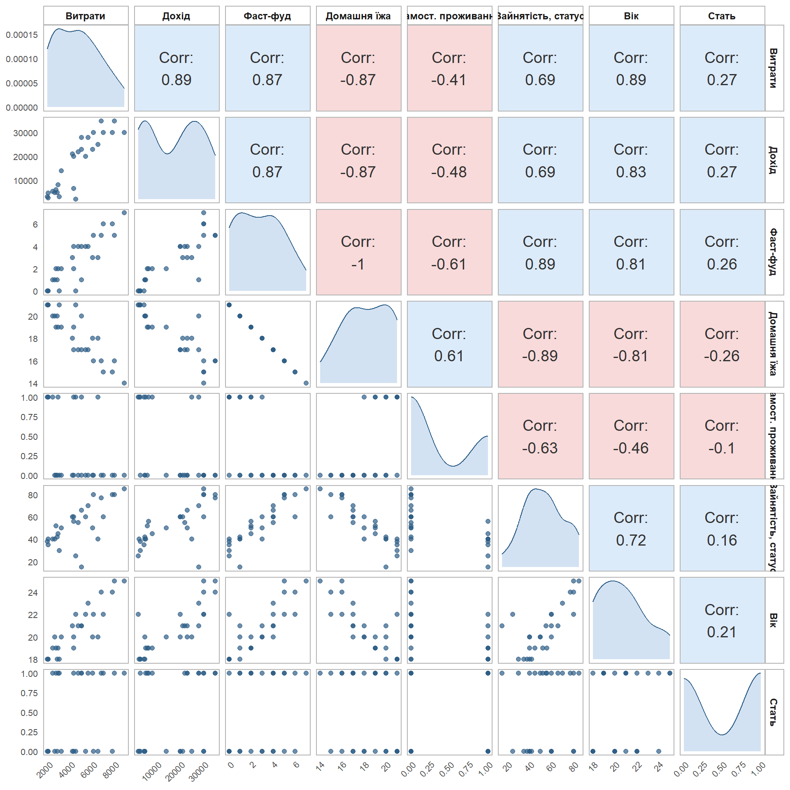
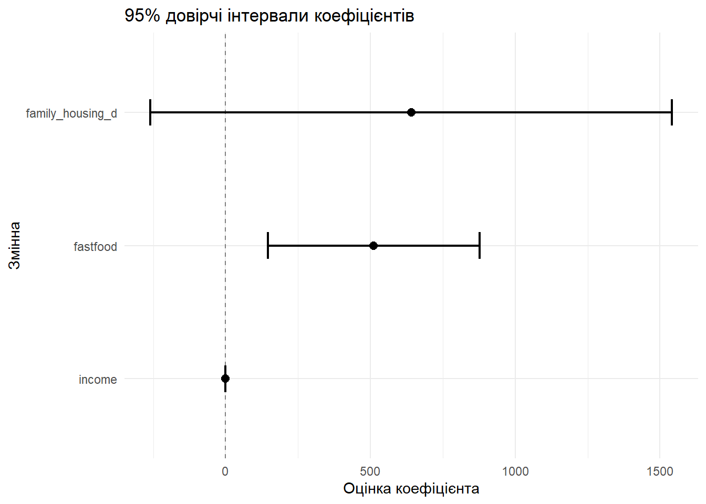
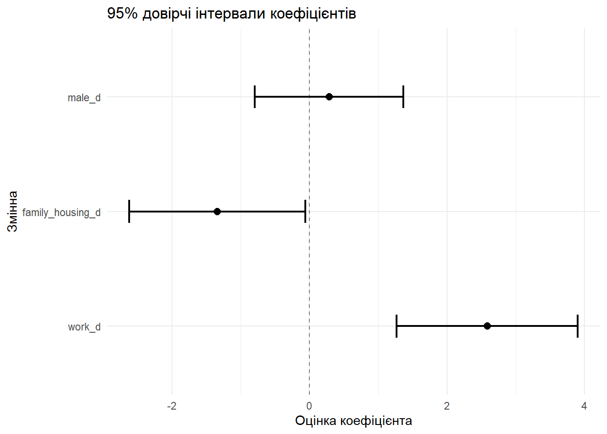

Стиль життя студентів та витрати на харчування
Опитування
Було проведено опитування, яке містило такі питанн
Скільки Ви в середньому витрачаєте на харчування за місяць?
Як часто протягом типового тижня Ви споживаєте такі види їжі?
Скільки годин типового тижня у середньому у Вас займають навчання та робота разом?
Який Ваш поточний статус зайнятості?
Де Ви переважно проживаєте під час навчання?
Який Ваш середній особистий місячний дохід?
Вкажіть Ваш вік (повних років)
Ваша стать
Результати опитування
Більшість студентів (67%) поєднують навчання з певною зайнятістю та водночас переважно проживають окремо від батьків, що вказує на поширеність економічної та побутової самостійності серед опитаних.
Описова статистика показує, що вибірка представлена переважно молодими студентами, які поєднують навчання з роботою та мають помітно вищу частоту споживання домашньої їжі порівняно з фастфудом. Водночас середні витрати на їжу є досить суттєвими, а значне стандартне відхилення доходу (17,196.30 грн) й витрат свідчить про помітну неоднорідність фінансового становища респондентів.
Моделювання та перевірка гіпотез
Для зручності економетричного аналізу змінні dummy-зміні було груповано. У таблиці подано описову статистику для всіх змінних вибірки. Для кількісних змінних наведено кількість спостережень, середнє значення, стандартне відхилення, мінімум і максимум. Для dummy-змінних замість середнього значення та стандартного відхилення подано кількість одиниць, кількість нулів і частку одиниць у відсотках.
| Змінна | Тип | N | Середнє | SD | Мін | Макс | К-сть 1 | К-сть 0 | Частка 1, % |
|---|---|---|---|---|---|---|---|---|---|
| Вік, років | Кількісна | 27 | 20.7 | 2.16 | 18 | 25 | — | — | — |
| Навчання + робота, годин на день | Кількісна | 27 | 53 | 18.23 | 15 | 85 | — | — | — |
| Фастфуд / доставка, разів на тиждень | Кількісна | 27 | 2.78 | 2.1 | 0 | 7 | — | — | — |
| Витрати на їжу за місяць, грн | Кількісна | 27 | 4651.85 | 2008.32 | 1900 | 8900 | — | — | — |
| Домашня їжа, разів на тиждень | Кількісна | 27 | 18.22 | 2.1 | 14 | 21 | — | — | — |
| Місячний дохід, грн | Кількісна | 27 | 17196.3 | 11605.09 | 2000 | 35000 | — | — | — |
| Проживає з родиною (1 = так) | Dummy | 27 | — | — | — | — | 9 | 18 | 33.33 |
| Чоловік (1 = так) | Dummy | 27 | — | — | — | — | 14 | 13 | 51.85 |
| Працює (1 = так) | Dummy | 27 | — | — | — | — | 18 | 9 | 66.67 |
Майже всі змінні демонструють тісний статистичний взаємозв’язок, тому під час побудови моделей особливу увагу буде приділено перевірці наявності або відсутності мультиколінеарності.

Модель1
\[ food\_exp_i = \beta_0 + \beta_1 income_i + \beta_2 fastfood_i + \beta_3 family\_housing_i + u_i \]
Оцінювання Моделі 1 показало, що найбільший статистично підтверджений вплив на витрати на їжу мають дохід і частота споживання фастфуду, тоді як тип проживання не продемонстрував статистично значущого ефекту.
| Змінна | Коефіцієнт | Ст. похибка | t-статистика | p-значення |
|---|---|---|---|---|
| const. | 1537.638 | 419.404 | 3.666 | 0.001 |
| income | 0.086 | 0.029 | 2.976 | 0.007 |
| fastfood | 511.201 | 176.614 | 2.894 | 0.008 |
| family_housing_d | 640.872 | 435.361 | 1.472 | 0.155 |

| Перевірка загальної значущості моделі | |||
| F-тест | |||
| Гіпотеза | F-стат. | p-знач. | Висновок |
|---|---|---|---|
| H0: усі коефіцієнти одночасно дорівнюють 0 | 42.006 | 0 | Відхиляємо H0: модель загалом значуща |
Модель 2
\[ fastfood_i = \beta_0 + \beta_1 employment_i + \beta_2 family\_housing_i + \beta_3 male_i + u_i \]
Результати Моделі 2 свідчать, що на частоту споживання фастфуду статистично значуще впливають зайнятість і тип проживання. Зокрема, студенти, які працюють та/або проживають окремо від батьків, частіше споживають фастфуд. Водночас стать не має статистично значущого впливу в межах цієї моделі.
| Змінна | Коефіцієнт | Ст. похибка | t-статистика | p-значення |
|---|---|---|---|---|
| Константа | 1.357 | 0.622 | 2.183 | 0.040 |
| work_d | 2.583 | 0.637 | 4.055 | 0.000 |
| family_housing_d | -1.344 | 0.618 | -2.174 | 0.040 |
| male_d | 0.283 | 0.523 | 0.542 | 0.593 |

| Перевірка загальної значущості моделі | |||
| F-тест | |||
| Гіпотеза | F-стат. | p-знач. | Висновок |
|---|---|---|---|
| H0: усі коефіцієнти одночасно дорівнюють 0 | 14.592 | 0 | Відхиляємо H0: модель загалом значуща |
Якісне дослідження
Питання для інтерв’ю:
Що найбільше впливає на ваш вибір їжі протягом тижня?
Чому ви обираєте саме такий формат харчування: домашню їжу, фастфуд чи доставку?
Чи змінювалась ваша харчова поведінка останнім часом?
Короткі тези за результатами 2 інтерв’ю
Експерт 1
Зазначив, що головними чинниками вибору їжі є брак часу та зручність. Через поєднання навчання і роботи частіше обирає фастфуд або доставку. Останнім часом намагається більше контролювати витрати на їжу.
Експерт 2
Пояснив, що найбільше на вибір харчування впливають домашні умови та доступність готової їжі вдома. Перевага надається домашній їжі, а фастфуд споживається рідше. Харчова поведінка суттєво не змінювалась, оскільки звички залишаються стабільними.
Основні теми
Обмеженість часу. Брак часу спонукає студентів обирати швидкі та зручні варіанти харчування.
Умови проживання. Проживання з батьками сприяє частішому споживанню домашньої їжі.
Практичність вибору. Під час вибору їжі студенти орієнтуються насамперед на зручність і доступність.
Висновок
| Аспект | Кількісне дослідження | Якісне дослідження |
|---|---|---|
| Фокус аналізу | Виявлення статистичних зв’язків між доходом, зайнятістю, проживанням і витратами на їжу | Пояснення причин харчової поведінки студентів |
| Основні результати | Дохід і частота споживання фастфуду впливають на витрати на їжу; зайнятість і тип проживання пов’язані зі споживанням фастфуду | Брак часу, умови проживання та зручність є ключовими чинниками вибору їжі |
| Перевага методу | Дає кількісне підтвердження зв’язків | Дає глибше розуміння мотивів і причин |
| Обмеження | Не повністю пояснює поведінкові мотиви | Не дає узагальнення |
Кількісний і якісний аналізи взаємно доповнюють один одного: перший показав основні статистичні закономірності, а другий допоміг пояснити їх зміст. Загалом дослідження свідчить, що харчова поведінка студентів формується під впливом доходу, зайнятості, типу проживання та дефіциту часу.